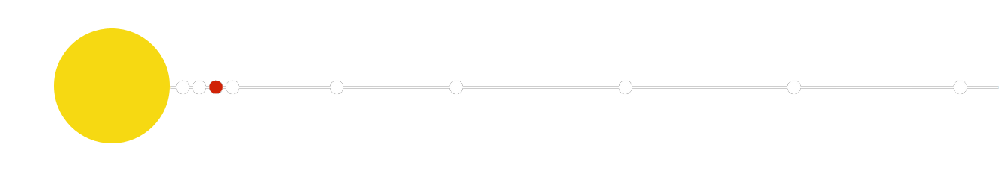
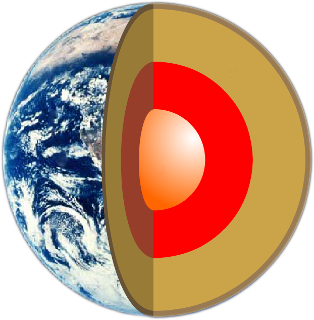

| HOMEPAGE | SISTEMA SOLARE | CORPI CELESTI | ||
| HOMEPAGE | SISTEMA SOLARE | CORPI CELESTI | ||
| paramentri orbitali | |
| semiasse maggiore | 149 597 887 km 1,000 000 112 UA |
| periodo orbitale | 365,256 giorni (11,863 892 anni) |
| diametro medio | 12745 km |
| Velocità orbitale |
29,291 km/s (min) 29,783 km/s (media) 30,287 km/s (max) |
| satelliti | 1 |
| anelli | NO |
| dati fisici | |
| diametro equatoriale | 12 756,216 km | superficie | 5,100656 x 1014 m2 |
| velocità di rotazione | 465 m/s |
| temperatura | 311 K (-27 °C) |
PIANETA BLU
La Terra è il terzo pianeta del sistema solare, e l'unico corpo celeste sul quale sia stata accertata la presenza di vita. Ha un raggio equatoriale di 6378 chilometri, e, a causa dello schiacciamento ai poli dovuto al moto di rotazione, un raggio polare di 6359 chilometri. La lunghezza dell'equatore è quindi di circa 40000 chilometri.Come noto, la Terra ruota su sè stessa in un periodo di esattamente 24 ore: tuttavia questo dato è riferito alla posizione del Sole (giorno solare); poichè nello stesso tempo il pianeta compie parte della sua rivoluzione intorno a questa stella, il tempo impiegato per ritornare nella stessa posizione rispetto alle altre stelle è leggermente minore: precisamente 3 minuti e 56 secondi, come si ottiene dividendo 24 ore per il periodo di rivoluzione (365.256 giorni). Quindi il giorno siderale, fondamentale per le osservazioni astronomiche, dura 23 ore, 56 minuti e 4 secondi.
IL MOVIMENTO
Il periodo di rivoluzione, come già detto, è di 365.256 giorni: questo valore non intero ci obbliga a ricorrere agli anni bisestili per rimetterci "in pari", ogni 4 anni. Poichè tuttavia la parte decimale dopo 365 non è esattamente .25, è necessario introdurre ulteriori correzioni: per ora ci si limita a NON considerare bisestili gli anni secolari non divisibili per 400, in futuro si vedrà: del resto sono solo 400 anni che è stato adottato l'attuale calendario (gregoriano). La distanza media dal Sole è di 149.6 milioni di chilometri: tale valore si chiama Unità Astronomica (UA), e viene usato spesso per misurare le distanze all'interno del sistema solare.ORBITA
 L'orbita non è circolare, ma ellittica (eccentricità 0.01672), il che fa variare la distanza Terra-Sole da un minimo di 147 milioni di chilometri circa (perielio, in gennaio) a un massimo di 152 milioni di chilometri circa (afelio, in luglio). Contrariamente a quanto si crede, non è affatto questa variazione della distanza dal Sole che determina l'alternarsi delle stagioni, ma un meccanismo completamente diverso, legato all'inclinazione dell'asse polare: come noto, tale inclinazione è di circa 23.44 gradi, e il risultato è che in certi periodi dell'anno (la nostra estate) la parte superiore della Terra (emisfero boreale) è inclinata verso il Sole, e viceversa. Questo fa sì che le radiazioni solari siano ricevute per un tempo maggiore delle 12 ore "canoniche", e soprattutto con grande inclinazione rispetto al suolo: quindi il terreno accumula una maggior quantità di calore (maggiore rispetto al periodo invernale, o all'altro emisfero, s'intende), e l'aria rimane più calda. Infatti il caldo (o il freddo) che noi sentiamo non dipende direttamente dall'irraggiamento solare, ma dal calore immagazzinato nel suolo: questo spiega perchè salendo in montagna si sente più freddo, e anche rapidamente !StruTTURA E STORIA
Tornando coi piedi sulla ... Terra, c'è ancora da dire qualcosa sulla sua struttura: innanzitutto la densità, 5.5 g/cm cubo, valore interessante perchè è circa il doppio rispetto a quello della superficie; quello delle rocce, del "terreno", per intenderci. Questo fa supporre che scendendo in profondità la densità del pianeta aumenti progressivamente, fino a raggiungere un valore di circa 10 nella parte interna (nucleo), che dovrebbe essere composta da metallo fuso. è notevole il fatto che la densità della Luna è analoga a quella superficiale terrestre, motivo per cui molti credono che la Luna sia semplicemente un pezzo di Terra staccatosi dalla sua superficie, o comunque dal suo involucro più esterno quando il sistema era ancora in formazione. Per quanto riguarda l'aspetto assunto dal pianeta dopo l'emersione dei continenti, questo è spiegato principalmente dalle due teorie della deriva dei continenti e della tettonica a zolle: secondo quest'ultima la Terra è divisa in zolle o placche, che tendono a espandersi lungo dorsali sottomarine, grazie all'afflusso di materiale proveniente dall'interno del pianeta: il risultato è uno "scontro" dei bordi delle zolle, che scivolano l'una sotto l'altra facendo scomparire il materiale in eccesso. Tale fenomeno è la principale causa dei terremoti: si pensi per esempio che sui bordi della zolla del Pacifico vi sono la California da un lato e il Giappone dall'altro, vale a dire due aree tra le più sismiche in assoluto. Ma l'espansione delle zolle ha anche come conseguenza lo spostamento lento ma continuo delle terre emerse (le piattaforme): queste formavano una volta una massa unica (Pangea), poi col tempo la parte "americana" si è staccata da quella "eurasiatica", e questa da quella "antartico-australiana"; successivamente anche l'Australia è andata per conto suo, e così pure l'India, che ha navigato dall'Antartide fino all'Asia, rimanendovi "incastrata", e creando la catena dell'Himalaya in seguito all'urto. Naturalmente si parla di processi che durano decine di milioni di anni, dal momento che il movimento delle zolle non supera i pochi centimetri all'anno !